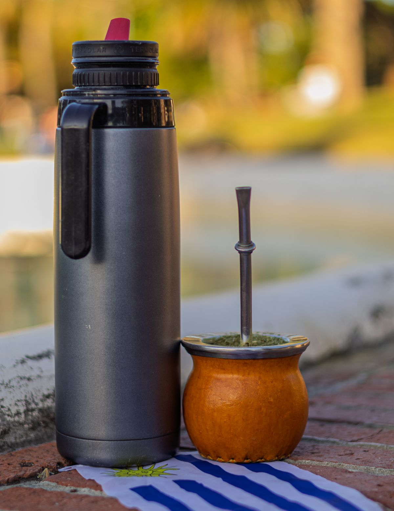
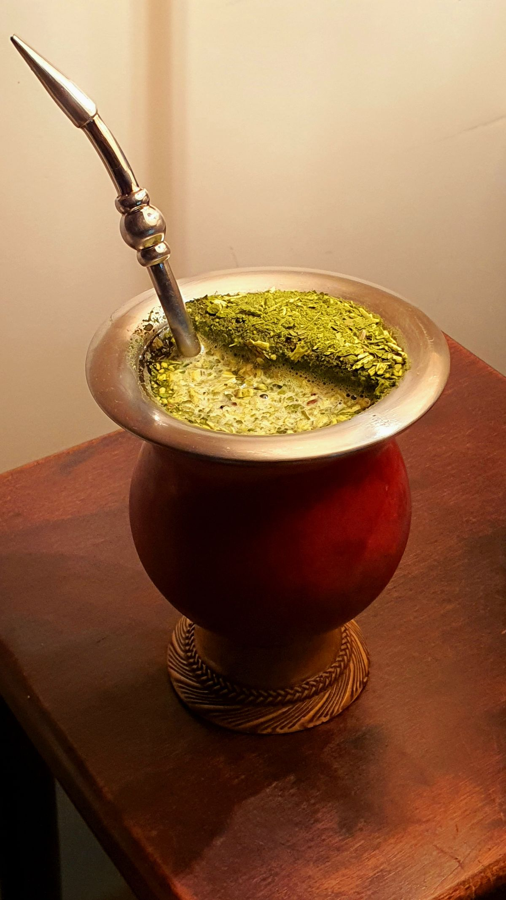
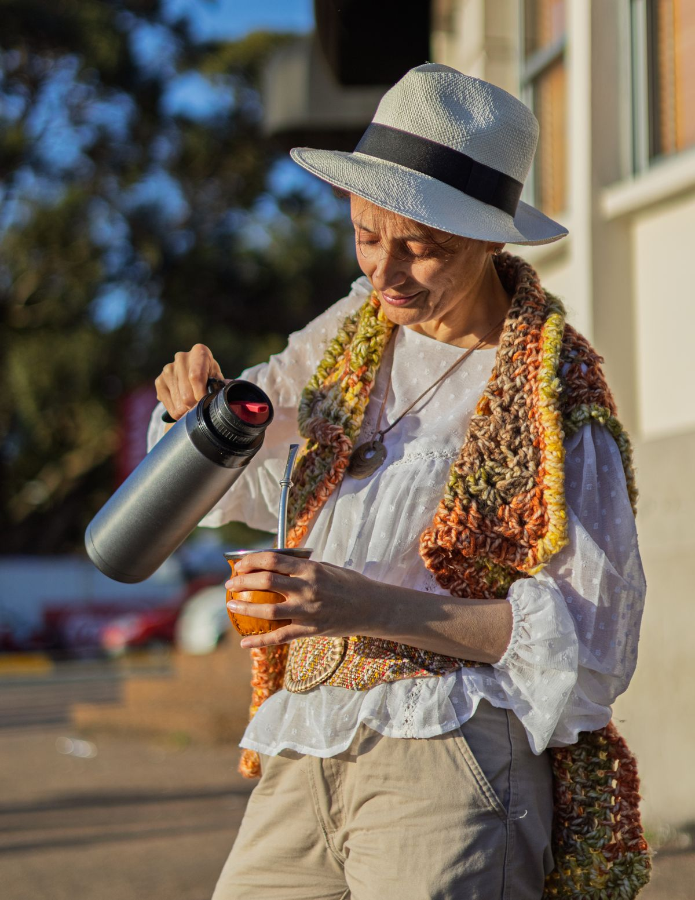

<title>The Basics — Mate Guide</title>
<meta charset="UTF-8">
<meta name="viewport" content="width=device-width, initial-scale=1.0">
<link rel="preconnect" href="https://fonts.googleapis.com">
<link rel="preconnect" href="https://fonts.gstatic.com" crossorigin>
<link href="https://fonts.googleapis.com/css2?family=Fraunces:opsz,wght@9..144,500;9..144,600;9..144,700&family=Inter:wght@400;500;600&display=swap" rel="stylesheet">
<link rel="stylesheet" href="style.css">

<nav class="site-nav">
  <a href="index.html">Home</a>
  <a href="basics.html" class="active">The Basics</a>
  <a href="types.html">Types of Mate</a>
  <a href="culture.html">Culture</a>
  <a href="quiz.html">Quiz</a>
</nav>

<nav class="sub-nav">
  <a href="#what-is-mate">What is Mate</a>
  <a href="#what-you-need">What You Need</a>
  <a href="#how-to-prepare">How to Prepare</a>
  <a href="#water-temperature">Water Temperature</a>
  <a href="#etiquette">Etiquette</a>
  <a href="#checklist">Checklist</a>
</nav>

<main>

  <section id="what-is-mate">
    <h2>What is Mate?</h2>
    <p>
      Mate (pronounced "MAH-teh") is a traditional drink from South America, popular in
      Argentina, Uruguay, Paraguay, and southern Brazil. It's made by steeping dried leaves
      of the yerba mate plant in hot water, and it's traditionally shared among friends and
      family from a single cup that's passed around a group.
    </p>
    <p>
      Mate is often compared to tea or coffee because it contains caffeine, but the way it's
      prepared and shared makes it a unique social ritual as much as a drink.
    </p>
    <h3>What is Yerba Mate?</h3>
    <p>
      Yerba mate is the plant whose dried, chopped leaves and stems are used to make the
      drink. It comes from a tree native to South America (<em>Ilex paraguariensis</em>).
      The leaves are dried, aged, and ground into a coarse, slightly dusty mix that looks a
      bit like a mix of loose tea and green tea powder.
    </p>
    <h3>Where Does it Come From?</h3>
    <p>
      Mate has been consumed for centuries, originating with the indigenous Guaraní people
      of South America. Today it's a daily habit for millions of people, deeply tied to
      hospitality and friendship in the region.
    </p>
  </section>

  <section id="what-you-need">
    <h2>What You Need</h2>
    <!-- Photo: "Yerba Mate Gourd and Thermos in Montevideo Park" by Sandy Rondón, Pexels
         https://www.pexels.com/photo/yerba-mate-gourd-and-thermos-in-montevideo-park-34449869/ -->
    
    <p>To get started, you'll need four basic items:</p>
    <ul class="items-list">
      <li>
        <strong>Mate (the cup):</strong> A small container, traditionally made from a hollowed
        gourd, though modern versions are made of wood, ceramic, glass, or stainless steel.
        This is the vessel the drink is named after.
      </li>
      <li>
        <strong>Bombilla:</strong> A metal straw with small holes or a filter at the bottom.
        It lets you sip the liquid while keeping the yerba leaves out of your mouth.
      </li>
      <li>
        <strong>Thermos:</strong> A vacuum flask that keeps water at the right temperature so
        you can refill your mate throughout the day without reheating water constantly.
      </li>
      <li>
        <strong>Yerba mate:</strong> The dried leaf mixture itself, available at most stores
        that sell international or specialty foods.
      </li>
    </ul>
  </section>

  <section id="how-to-prepare">
    <h2>How to Prepare It — Step by Step</h2>
    <!-- Photo: "Yerba Mate in Bombilla" by Walter Spiess, Pexels
         https://www.pexels.com/photo/yerba-mate-in-bombilla-25436250/ -->
    
    <ol class="steps-list">
      <li>
        <strong>Fill the mate.</strong> Fill the cup about two-thirds to three-quarters full
        with dry yerba mate.
      </li>
      <li>
        <strong>Tilt the mate.</strong> Cover the opening with your hand and tilt the mate
        almost sideways, then gently shake it. This moves the fine dust to one side, which
        helps prevent it from clogging the bombilla later.
      </li>
      <li>
        <strong>Add a little cool water first.</strong> With the mate still tilted, pour a
        small amount of lukewarm or cool water onto the "low" side of the yerba, where the
        dust settled. Let it soak for about 30 seconds. This step protects the delicate
        flavor compounds from being damaged by hot water right away.
      </li>
      <li>
        <strong>Insert the bombilla.</strong> Place the bombilla into the low, wet side of the
        yerba, pushing it in gently until it reaches the bottom. Try not to stir it around.
      </li>
      <li>
        <strong>Add hot (not boiling) water.</strong> Slowly pour hot water into the same spot
        where the bombilla sits, filling the mate close to the top. See the
        <a href="#water-temperature">Water Temperature</a> section below — this part matters a lot.
      </li>
      <li>
        <strong>Sip slowly.</strong> Drink through the bombilla until you hear a slight
        gurgling sound, which means the water is finished. Then refill with hot water and
        pass it on, if you're sharing.
      </li>
    </ol>
  </section>

  <section id="water-temperature">
    <h2>Water Temperature</h2>
    <p>
      One of the most common mistakes beginners make is using boiling water. Water for mate
      should <strong>never boil</strong>. Boiling water burns the yerba, ruins the flavor, and
      makes the mate taste bitter and unpleasant.
    </p>
    <p>
      The ideal temperature is around <strong>70–80°C (160–175°F)</strong> — hot, with small
      bubbles just starting to form at the bottom of the pot, but well before a rolling boil.
      If you don't have a thermometer, simply take the water off the heat right as the first
      small bubbles appear, and let it sit for about a minute before pouring.
    </p>
  </section>

  <section id="etiquette">
    <h2>Mate Etiquette</h2>
    <!-- Photo: "Elderly Woman Pouring Traditional Yerba Mate Outdoors" by Sandy Rondón, Pexels
         https://www.pexels.com/photo/elderly-woman-pouring-traditional-yerba-mate-outdoors-34449876/ -->
    
    <ul class="etiquette-list">
      <li>
        <strong>The round (la ronda):</strong> When mate is shared, one person acts as the
        "server" (cebador/a). They prepare the mate, drink it first to test it, then refill
        it and pass it to the next person. Each person drinks the whole serving and hands
        the mate back to the server, who refills it for the next person in the circle.
      </li>
      <li>
        <strong>Don't stir the bombilla:</strong> Moving the bombilla around stirs up the
        yerba and clogs the straw, making it hard to drink. Once it's placed, leave it be.
      </li>
      <li>
        <strong>Saying "thank you" (gracias):</strong> This is important — if you say
        "thank you" (gracias) when handing the mate back, it signals to the server that you
        don't want any more. If you're still enjoying it, just hand it back in silence and
        it will keep coming your way.
      </li>
    </ul>
  </section>

  <section id="checklist">
    <h2>Do You Have Everything?</h2>
    <p>Check off each item as you gather it, and see if you're ready to start.</p>
    <ul class="checklist" id="mate-checklist">
      <li><label><input type="checkbox" value="mate"> Mate (the cup)</label></li>
      <li><label><input type="checkbox" value="bombilla"> Bombilla (metal straw)</label></li>
      <li><label><input type="checkbox" value="thermos"> Thermos with hot water</label></li>
      <li><label><input type="checkbox" value="yerba"> Yerba mate</label></li>
    </ul>
    <p id="checklist-status" class="checklist-status" aria-live="polite">
      0 of 4 ready.
    </p>
  </section>

</main>

<footer class="site-footer">
  <p>Made for anyone trying mate for the first time. Enjoy!</p>
</footer>

<script src="script.js"></script>
